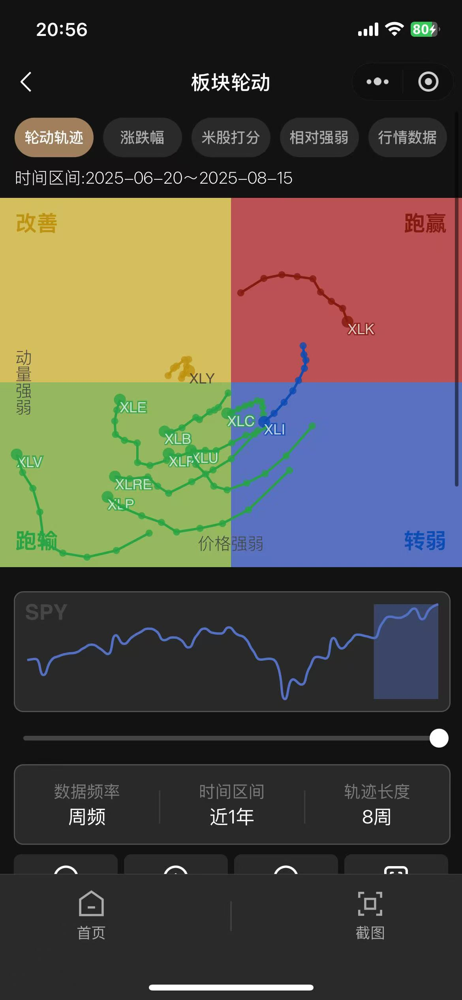
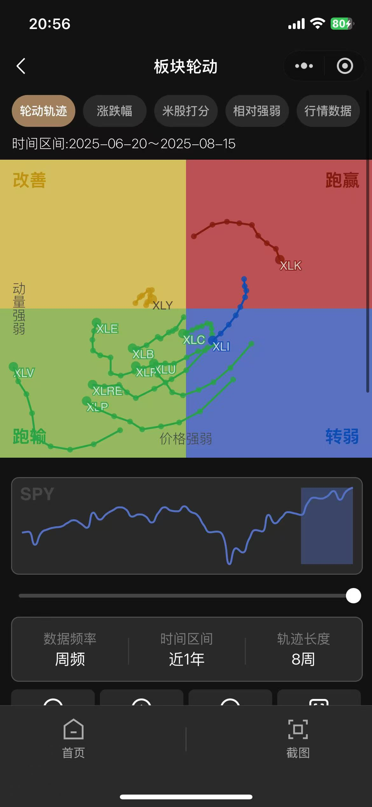

小程序
米股研究
项目背景
解决国内美股投研服务不到位的问题，构建基本面 + 技术面研究支持，帮助用户把握趋势。
基于大模型自动生成技术分析报告；通过提示词工程与评测集校准降低幻觉，构建审校闭环以提升准确率与一致性。


 


项目复盘与思考
对于投资类产品，离交易越近变现越容易。用户并不会为不确定性的学习结果付费，因此迭代方向（AI 分析、视频讲解）需更贴近交易并增强信任感。
对数据极度敏感，擅长将复杂指标提炼为可决策的可视化；同时保持内容表达的温度与节奏，用清晰叙事把产品能力、用户价值与业务目标拧成一股绳。
核心背景、职责贡献、可视化与复盘
解决国内美股投研服务不到位的问题，构建基本面 + 技术面研究支持，帮助用户把握趋势。
基于大模型自动生成技术分析报告；通过提示词工程与评测集校准降低幻觉，构建审校闭环以提升准确率与一致性。
对于投资类产品，离交易越近变现越容易。用户并不会为不确定性的学习结果付费，因此迭代方向（AI 分析、视频讲解）需更贴近交易并增强信任感。
沉淀大型买方基金分析平台的定制经验，打造标准化基金分析产品，以降低成本并扩大市场覆盖。

展示主动学习、技术热情与内容品味
学习 Vibe Coding，探索 AI 协同开发模式，同时满足工作与创作的实际需求。
3 个短视频，探索 AIGC 在视频领域的能力边界（下方为占位播放器，替换为 B 站分享链接即可）。